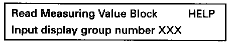
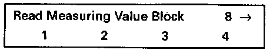

Transmission Position Sensor/Switch: Testing and Inspection
Signal From Automatic Transmission:Checking:
Special tools, testers and auxiliary items:
- VAG 1551/1552 scan tool with VAG 1551/3 adapter cable.
- VAG 1598/18 test box.
- Multimeter (Fluke 83 or equivalent).
- Connector test kit VW 1594.
- Wiring diagram.
Test sequence:
- Engine running at idle.
- Connect VAG 1551/1552 scan tool and select "Engine Electronics" address word 01. Testing and Inspection

Indicated on display
- Press buttons -0- and -8- to select "Read Measuring Value Block" function 08 and press -Q- button to confirm input.

Indicated on display
- Press buttons -0-, -0- and -8- to input display group 008 and press -Q- button to confirm input.

Indicated on display (1-4 = Display fields)
- Check signals from automatic transmission (display field 2).

Continuation:
If the display does not read as described:
- Check wiring between ECM (terminals 07, 11, 18 and 21) and Transmission Control Module (TCM) according to wiring diagram.